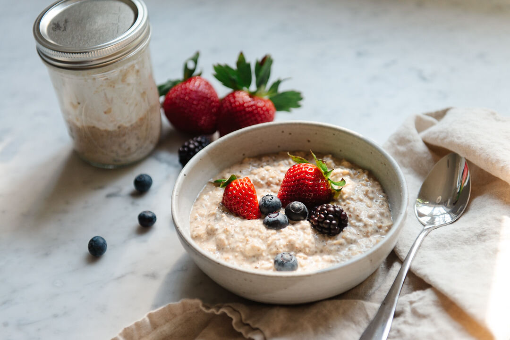

Overnight Oats

Overnight oats are a simple, nutritious way to make sure that you get your breakfast ready each day. You can top them off with your favorite fruit to best suit your tastes!
Ingredients
- 1 cup almond milk
- 1/2 cup rolled oats
- 3/4 teaspoon chia seeds
- 2 tablespoon almond butter
- 1 tablespoon maple syrup + more for topping
- Fruit of your choice for topping
Instructions
- Add the almond milk, rolled oats, chia seeds, almond butter, and maple syrup directly into your mason jar. Using a spoon, mix until the milk has incorporated evenly with the oat mixture.
- Press down with your spoon to ensure all the oats and seeds are moistened and are immersed in the almond milk.
- Cover with the jar lid and refrigerate overnight or at least 6 hours until the oats have been evenly rehydrated.
- When ready to serve, top with your choice of seasonal fruit followed by more maple syrup if you wish. The oats will last for 2-3 days in your refrigerator. Keep the fruit separate to extend shelf life.